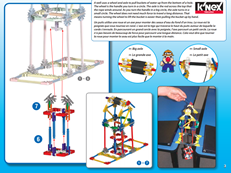
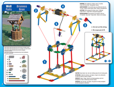

Extend Yourself - K'NEX STEM Simple Machines: Build and Measure with Wheels and Axles
 Build a Compound Machine
Build a Compound Machine
Now try to build a more advanced compound machine from the K'NEX STEM Simple Machines: Wheels & Axles and Inclined Planes Instruction Manual. Some of these machines may not seem like they have wheels and axles at first, but pay attention to what is rotating and what it rotates around. (Hint: The wheel and axle can rotate together, or they can move separately.). After you build the model, take a picture and label the wheel and axle. Then answer the following questions:
- What work does the machine do in the real world? What problem does it solve?
- How might these machines make work easier?
- What is the wheel's job?
- What is the axle's job?
|  |  |
 |
 |
 |
|
Create Your Own Machine
Use what you have learned to build your own wheel and axle machine. What does it do?
Now that you have had a chance to build models of wheel and axle machines, it is your turn to create and build your own machine. If you already know what you want to build, go for it! If you need some help getting started, use the steps below:
- Start by thinking of a problem that you want to solve.
- Think about ways that a wheel and axle machine can solve the problem.
- Draw a sketch that shows how the machine solves the problem.
- Gather the K'NEX parts that you will use.
- Build your model.
Explore More about Line Plots
In this interactive exploration, you will watch a video that will help you learn even more about line plots. All you need is a piece of paper and a pencil. Click here to get started.
Ravens Football Line Plot
In this interactive exploration, you will make a line plot using data about the Baltimore Ravens football team. You will also learn how to analyze the data like a statistician. Click here to get started.